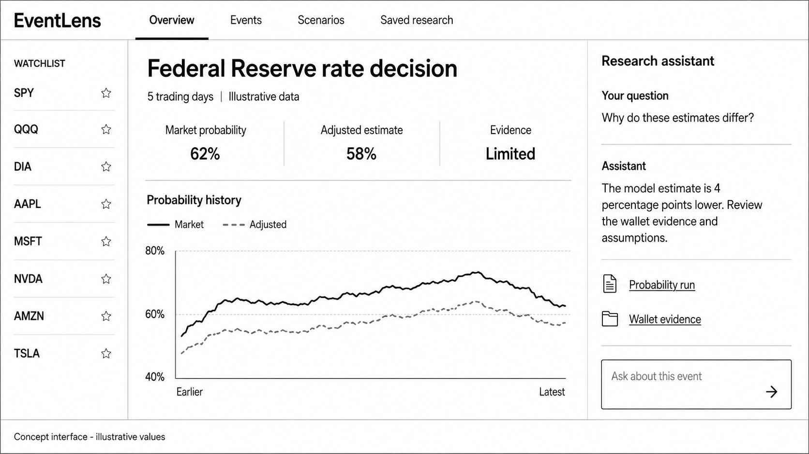
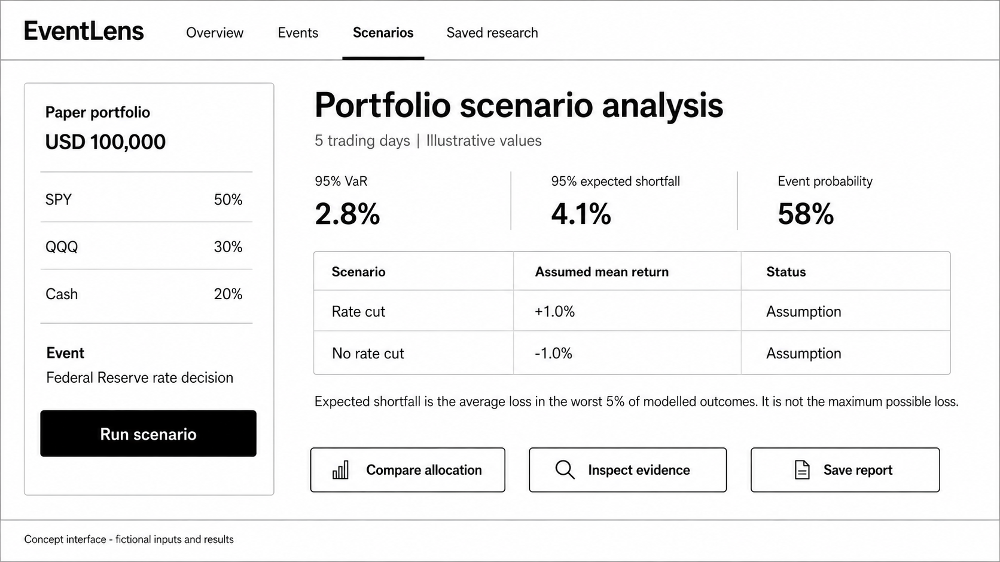

Testing whether prediction-market activity can improve event-driven volatility analysis.
01Prediction-market probabilities
02Historically informative wallets
03Volatility and portfolio risk
Cheung Hau Yin Franklin Hou Anthony Tian Rui Liu Ngai Chiu Sze Wang Cheong
Opening. EventLens asks one focused research question: can prediction-market information improve the way we study risk around scheduled events? The project combines Polymarket prices, public wallet activity and conventional asset data. The goal is a reproducible research system, not a trading recommendation engine. Source: proposal abstract and Section 1.
Motivation and research gap
A probability signal for event risk
OBSERVED GAP
Asset markets show repricing, not the event probability itself
News, prices and volatility indicators reveal market reaction. They do not directly show a continuously updated probability for the underlying event.
RESEARCH OPPORTUNITY
Prediction markets expose both prices and participant histories
Contract prices provide market-implied probabilities. Public settlement records make dated wallet behavior observable for research.
69%of users lost money in one recent Polymarket study
0.1%of users captured more than half of aggregate gains
Core questionDo wallet and event features improve out-of-sample volatility forecasts?
Why this matters. Event risk often enters financial analysis indirectly. Prediction markets offer an explicit probability, while blockchain settlement records let us study whether some participants have persistent informational value. The cited concentration figures motivate the wallet analysis, but they do not prove predictability. EventLens must test that claim out of sample. Source: proposal Sections 1.1 and 1.3, citing Akey et al.
Logical system architecture
From on-chain activity to asset volatility research
MARKET STATE
Polymarket APIs
Event rules, contract prices, order books and resolution status
WALLET ACTIVITY
Polygon and Goldsky
Fills, positions, transfers, redemptions and receipt checks
FINANCIAL CONTEXT
ETF and event data
Adjusted returns, supported assets and Federal Reserve timing
Volatility forecasts, scenarios, VaR and expected shortfall
RESEARCH OUTPUTDoes prediction-market information improve out-of-sample asset volatility forecasts?
End-to-end flow. Polymarket provides event definitions and market probabilities. Polygon and Goldsky provide wallet-level activity, while financial feeds provide ETF returns and the Federal Reserve provides announcement timing. The evidence layer normalizes and freezes these records at each historical cut-off. Wallet scores feed the probability model. Reviewed event–asset mappings then connect those probabilities to volatility forecasts and portfolio scenarios. Source: proposal Sections 2.1 and 2.2.
Research boundary
A narrow MVP keeps the test credible
VenuePolymarket on Polygon
EventsFederal Reserve rate decisions
AssetsMajor indices and ETFs
Horizons1, 5 and 20 trading days
Wallet modelAddress-level, past-only scoring
SUCCESS CRITERIONIncremental predictive value against a fixed volatility baseline
Extensions wait for evidence
Other event classes, individual equities, cross-platform data and entity clustering remain outside the first validation cycle.
Scope discipline. The MVP prioritizes data feasibility and a valid experiment. It starts with Polymarket on Polygon, Federal Reserve decisions and index-tracking assets. The horizons match the proposal. Extensions only proceed if historical coverage and model stability support them. This prevents the team from broadening the sample informally after seeing early results. Source: proposal Section 1.2 and evaluation design.
Probability research
Wallet evidence must earn its weight
01
Consolidate decisions
Separate directional exposure from balanced YES and NO holdings.
02
Score past informativeness
Use eventual outcomes, later price movement and breadth of history.
03
Shrink uncertain scores
Pull sparse histories toward the population average.
04
Calibrate probability
Add wallet flow and market-quality controls to a regularized logistic model.
MARKET ESTIMATEpraw
YES bid/ask midpoint with spread, depth and timestamp.
WALLET-INFORMED PROBABILITYpadj
Calibrated model with eligible-wallet flow.
PROVISIONAL ELIGIBILITY≥10
Earlier resolved events across at least 3 announcement dates. Test 5 and 20 in sensitivity analysis.
Wallet method. A smart-wallet label remains provisional and dated. Repeated fills become one wallet-event decision. The first eligibility rule requires at least ten earlier resolved events across three announcement dates, with sensitivity checks at five and twenty. If history is insufficient, the wallet signal is unavailable. Raw and wallet-informed probabilities stay visible separately so we can measure the wallet contribution. Source: proposal Section 2.1.
Forecasting and scenarios
One controlled comparison, two research outputs
RVt,H = Σ r²t+hfor H = 1, 5, 20 trading days
BASELINE
Recent-return regression
Average squared daily return over the preceding 20 trading days.
AUGMENTED
Same model plus event features
Add praw and the wallet-informed probability difference padj − praw.
Compare MSE and QLIKE on identical forecast dates and units.
Cross-asset dependence is preserved when sampling joint returns.
Forecast test. The forecast target is realized variance from daily returns. The baseline uses recent variation only. The augmented model keeps the same regression and adds the raw probability plus the wallet-informed probability difference. That design isolates whether prediction-market features add value. A separate scenario engine combines conditional YES and NO return distributions to calculate hypothetical portfolio risk. Source: proposal Section 2.1.
System design
Calculations remain separate from explanations
DATA
Evidence layer
APIs, receipts, PostgreSQL, Parquet and versioned source records
›
ANALYTICS
Research services
Wallet scoring, probability calibration, forecasting and scenarios
›
DELIVERY
Dashboard and assistant
Validated APIs, saved runs, evidence links and research reports
1Event research agent
Retrieves evidence and proposes asset mappings for review.
2Analysis coordinator
Validates inputs and submits typed calculation requests.
3Explanation agent
Reads saved results and answers with source references.
The assistant cannot change wallet eligibility, fitted models or saved numerical results.
Controlled AI. The architecture makes the numerical boundary explicit. Research services calculate probabilities and risk metrics. The assistant can retrieve evidence, request a validated run and explain saved outputs, but it cannot invent a number or alter model eligibility. Each answer refers back to run IDs and evidence IDs. Source: proposal Sections 2.1 and 2.2.
Product experience
Evidence and scenarios in one research journey

Overview compares market and wallet-informed probabilities with supporting evidence.

Scenarios connects a paper portfolio to VaR, expected shortfall and assumptions.
Illustrative concept screens. Values shown are not research results.
User journey. A user selects an asset or paper portfolio, chooses a horizon and reviews relevant events. The overview compares raw and wallet-informed probabilities and links to wallet evidence. The scenario view shows hypothetical risk metrics with assumptions. These are concept screens from the proposal, so every displayed value remains illustrative. Source: proposal Section 2.1 and Figures 5–6.